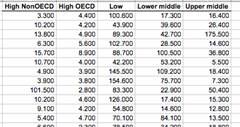
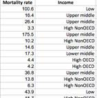
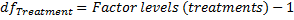
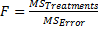
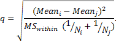
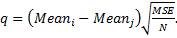
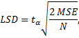
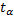

One-way ANOVA
The One-way ANOVA procedure compares means between two or more groups. It is used to compare the effect of multiple levels (treatments) of a single factor, either discrete or continuous, when there are multiple observations at each level. The null hypothesis is that the means of the measurement variable are the same for the different groups of data.
Assumptions
The results can be considered reliable if a) observations within each group are independent random samples and approximately normally distributed, b) populations variances are equal and c) the data are continuous. If the assumptions are not met, consider using non-parametric Kruskal-Wallis test.
How To
If observations for each level are in different columns – run the Statistics→Analysis of variance (ANOVA)→One-way ANOVA (unstacked) command.
For stacked data run the Statistics→Analysis of variance (ANOVA)→One-way ANOVA (with group variable) command, select a Response variable and a Factor variable. Factor variable is a categorical variable with numeric or text values.
LE version includes only One-way ANOVA (unstacked, w/o post-hoc tests) command, and it is similar to the “ANOVA - Single Factor” command from the Analysis Toolpak package for Microsoft Excel and does not include post-hoc comparisons.
Data Layout
The data for one-way ANOVA can be arranged in two ways, as shown below.
|
Samples for each
factor level (group)  |
Factor levels
are defined by values of  |
|
Run the “One-way ANOVA (unstacked)” command. |
Run the One-way ANOVA (with group variable) command. |
Results
Report includes analysis of variance summary table and post-hoc comparisons.
Analysis of variance table
The basic idea of ANOVA is to split total variation of the observations into two pieces - the variation within groups (error variation) and the variation between groups (treatment variation) and then test the significance of these components contribution to the total variation.
Source of Variation - the source of variation (term
in the model).
SS (Sum of Squares) - the sum of squares for
the term.
DF (Degrees of freedom) - the number of the degrees of freedom for the corresponding model term.

MS (Mean Square) - the estimate of the variation accounted for by this term.

F - the F-test statistic, under the null hypothesis is distributed as .

p-level - the significance
level of the F-test. If p-level is less than the significance level  – the
null hypothesis is rejected, and we can conclude that not all of the group
means are equal.
– the
null hypothesis is rejected, and we can conclude that not all of the group
means are equal.
Post-hoc analysis (Multiple Comparison Procedures)
While significant F-test can tell us that the group means
are not all equal, we do not know exactly which means are significantly different
from which other ones. With a comparison procedure we compare the means of each
two groups. The Significant column values show if
means difference is significant at the  alpha
level and we should reject the null hypothesis H0.
alpha
level and we should reject the null hypothesis H0.
Scheffe contrasts among pairs of means
Scheffe’s test is most popular of the post hoc procedures, the most flexible, and the most conservative. Scheffe test corrects alpha for all pair-wise comparisons of means. The test statistic is defined as

The test statistic is calculated for each pair of means and the null hypothesis is rejected if is greater than the critical value , as previously defined for the original ANOVA analysis
Tukey Test for Differences Between Means
Tukey’s HSD (honestly significant difference) or Tukey A test is based on a studentized range distribution.
The test statistic is defined as 
Tukey test requires equal sample sizes per group, but can be adapted to unequal sample sizes as well. The simplest adaptation uses the harmonic mean of group sizes as N.
Tukey B or Tukey WSD (Wholly Significant Difference) Test
Tukey’s B (WSD) test is also based on a studentized range distribution. Alpha for Tukey B test is the average of the Newman-Keuls alpha and the Tukey HSD alpha.
Newman-Keuls Test
The Newman-Keuls test is a stepwise multiple range test, based on a studentized range distribution. The test statistic is identical to Tukey test statistic but Newman-Keuls test uses different critical values for different pairs of mean comparisons - the greater the rank difference between pairs of means, the greater the critical value. The test is more powerful but less conservative than Tukey’s tests.
Bonferroni Test for Differences Between Means
The Bonferroni test is based on the idea to divide the familywise error rate α among tests and test each individual hypothesis at the statistical significance level of 1/n times what it would be if only one hypothesis were tested, i.e. at the significance level of α/n.
Fisher Least Significant Difference (LSD) Test
The Fisher LSD test is based on the idea that if an omnibus test is conducted and is significant, the null hypothesis is incorrect. The test statistic is defined as

where 
References
Design and Analysis: A Researcher's Handbook. 3rd edition. Geoffrey Keppel. Englewood Cliffs, NJ: Prentice-Hall, 1991.
Experimental Design: Procedures for the Behavioral Sciences – 3rd Edition (1995). Roger E. Kirk Pacific Grove, CA: Brooks/Cole, 1995.
Handbook of Parametric and Nonparametric Statistical Procedures (3rd ed.). Sheskin, David J.. Boca Raton, FL, 1989.